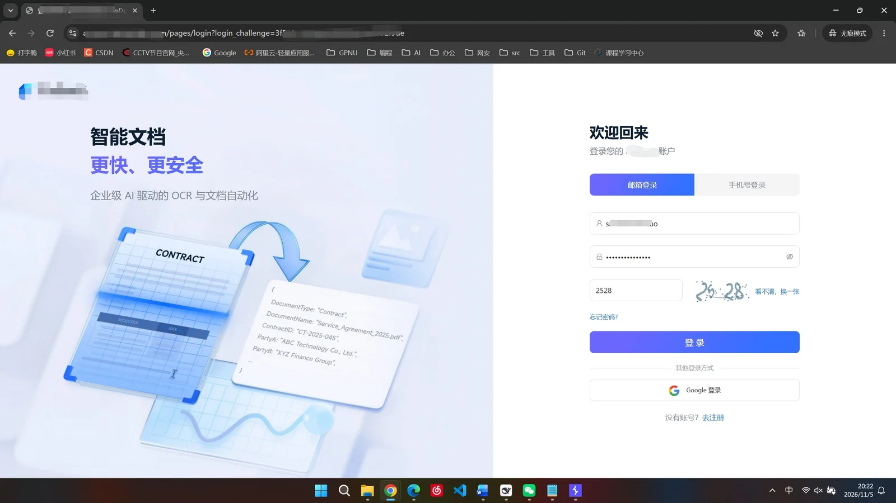
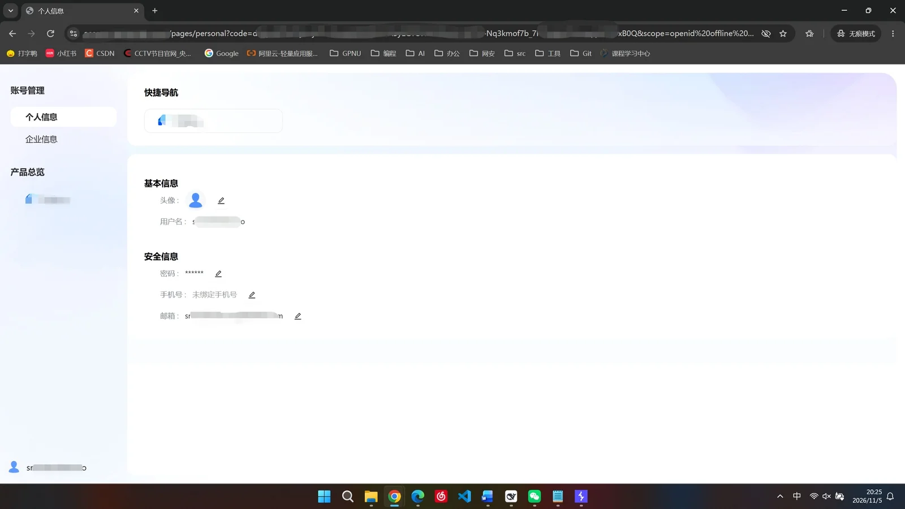
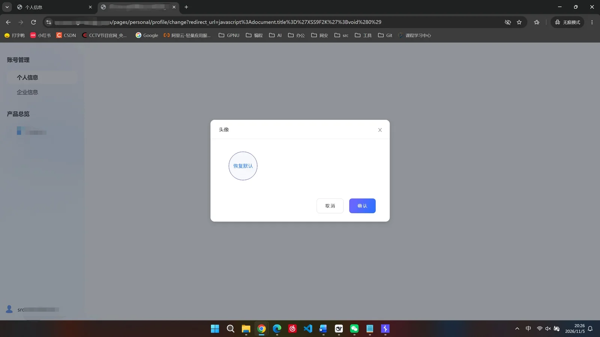
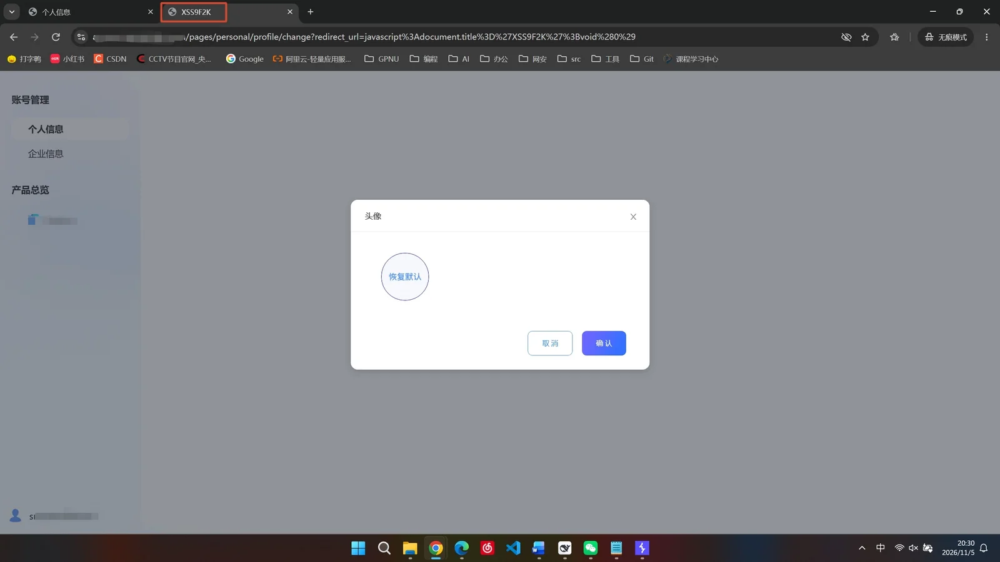
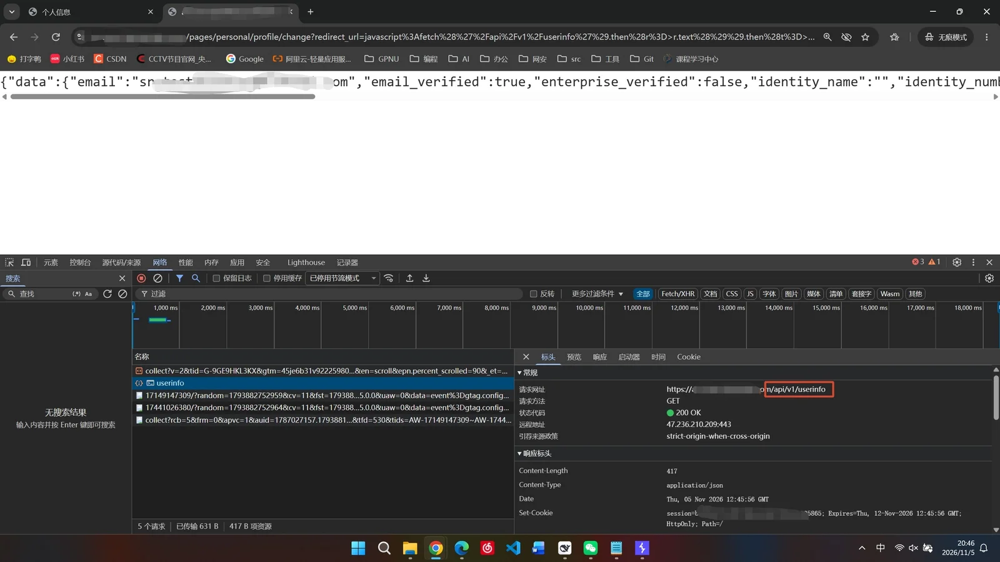
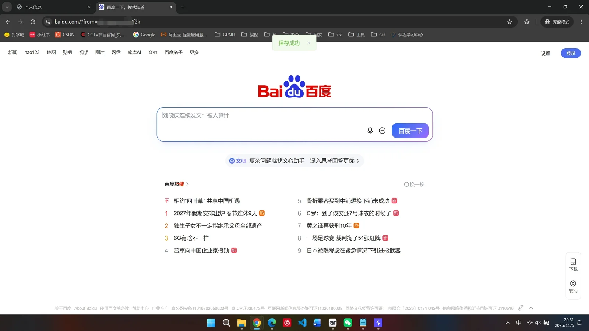

免责声明
本文仅用于安全技术研究与交流，文中涉及的漏洞已提交至厂商 SRC。文中域名、接口、参数及数据均已做脱敏处理，请勿将本文内容用于任何未经授权的测试、攻击或非法获利。
读者应遵守《中华人民共和国网络安全法》等相关法律法规。因不当使用本文内容所造成的一切后果及法律责任，由使用者自行承担，作者不承担任何责任。如本文内容侵犯了您的权益，请联系作者删除。
漏洞简述
某厂商国际版账号中心的个人中心页面，前端在「取消 / 完成」回调里直接读取 URL 查询参数中的跳转地址并赋值给 location.href，未校验协议与目标域名。攻击者构造 javascript: 伪协议链接，诱导已登录用户打开并点击一次「取消」，脚本即在账号中心域内执行：可同源读取当前用户的邮箱、手机号以及实名姓名与证件号并静默外带，也可在可信域名内伪造登录表单实施钓鱼。
完整过程
入口在另一个子域
目标是一个国际站（下称 global.XXX.com）。首页是 Gatsby 生成的静态站，挂在 OSS + CDN 上，响应里带 x-oss-request-id，一眼就能看出是对象存储直出。
随机请求 5 个不存在的路径，返回的 403 页面字节级完全一致（45,704 字节的 Gatsby 404 页）。站点是统一的软 404，挂字典扫目录没有意义，于是把精力转到 JS 上。
营销站的主 bundle 里有一个配置模块，写着 baseUrl、consoleUrl、findocxUrl 等地址，顺着就翻到了一个没在页面导航里出现的子域：account-global.XXX.com——国际版账号中心。登录、个人资料、实名、企业信息这些业务都在这里。
登录，进入个人中心
账号中心是自注册的：图形验证码 → 邮箱验证码 → 设置用户名密码。用一个临时邮箱走完了流程，拿到一个普通账号。

登录后进入个人中心，能看到基本信息与安全信息（头像、用户名、密码、手机号、邮箱）：

构造链接
把账号中心的前端 bundle 拉下来，搜跳转相关代码，很快看到一个很朴素的函数：
1 | v = function (e) { |
同一份 bundle 里，改密成功的回调也是同样的写法：
1 | ...then(function (e) { |
个人中心的头像、密码、手机号、邮箱几个子页，取消 / 完成回调复用的都是这个 v()。只要 redirect_url 可控，location.href 就能被赋成任意值；如果值是 javascript: 伪协议，就会在当前文档里执行脚本，而不是跳转。
把 redirect_url 设为 javascript:document.title='XSS9F2K';void(0)，打开构造好的链接，页面正常弹出「头像」编辑框：

点「取 消」，标题变成 XSS9F2K
点击弹窗左下角的「取 消」，标签页标题变成 XSS9F2K：

这里有个很容易误判的细节：页面看起来没有任何变化。这是正常的——javascript: 伪协议只在当前文档里执行，不会发起导航或刷新，所以唯一可见的副作用就是标题被改。标题能变成任意字符串，只有 JS 能做到，这就是执行证据。
同源读取：页面直接显示账号 JSON
把 payload 换成同源请求，把 userinfo 的返回直接写到页面上：
1 | javascript:fetch('/api/v1/userinfo').then(r=>r.text()).then(t=>document.body.innerHTML='<pre>'+t.replace(/</g,'<')+'</pre>') |
点击「取 消」后，页面变成账号 JSON，DevTools 的 Network 里能看到 GET /api/v1/userinfo 返回 200：

因为脚本和接口同源，fetch 会自动带上 HttpOnly 的会话 Cookie——不需要读 Cookie，效果等价于「以受害者身份发请求」。响应里的 email、uid、identity_name、identity_number、phone_number 都会一并返回；测试账号未实名，所以实名与手机字段为空，但字段结构是确认的。
附带影响：开放重定向
同一个参数换成普通 URL，点「取 消」后会直接跳走。把 redirect_url 设为 https://www.baidu.com/?from=...：
点击后页面跳到百度：

example.com 和 www.baidu.com 都试过，均跳转成功——redirect_url 没有任何协议或域名白名单，属于同一处 sink 的开放重定向。
危害
- 身份信息泄露：同源读取
/api/v1/userinfo，包含邮箱、手机号；已实名用户的identity_name（姓名）与identity_number（证件号）也在同一响应里。脚本可以静默外带，页面没有任何感知。 - 会话内操作：以受害者身份调用账号中心同源接口（头像、活体 token 申请、退出登录等），不需要知道密码。
- 可信域钓鱼：脚本可以把页面替换成「会话过期，请重新输入密码」的表单，用户输入后即时外带；页面域名是账号中心本身，欺骗性远高于独立钓鱼站。
- 开放重定向：同一参数可跳任意外部域名，可配合品牌仿冒。
修复建议
- 跳转参数只允许站内相对路径或白名单域名：以
/开头且非//，或显式白名单；拒绝javascript:、data:、vbscript:等伪协议。 - 解码后再校验：先完整 URL 解码 / 规范化，再判断协议与主机，防止
java%09script:、大小写、前后空白等变形。 - 在公共函数处统一修复：个人中心多个子页复用同一个
v()，只改一个页面会漏。 - 补 CSP：
script-src 'self'作为纵深防御，降低同类 DOM 注入的成功率。 - 回归用例：把
javascript:、java%09script:、//evil.com、https://evil.com写成自动化回归。
说些什么吧！